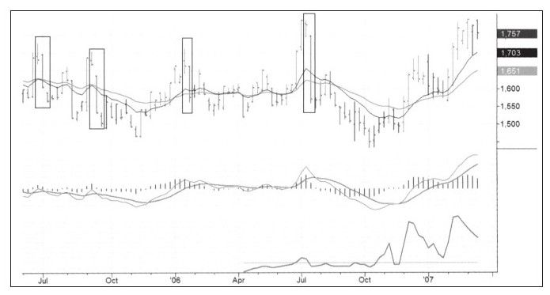
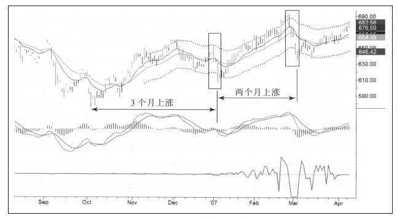
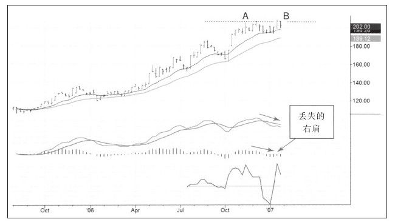
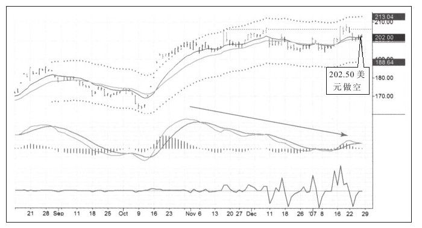
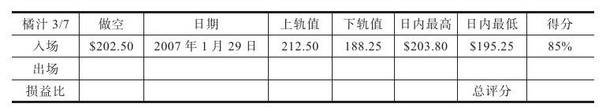
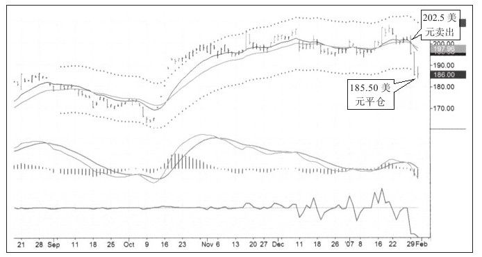
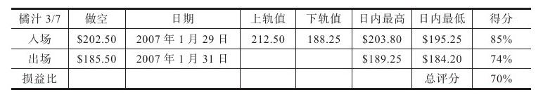
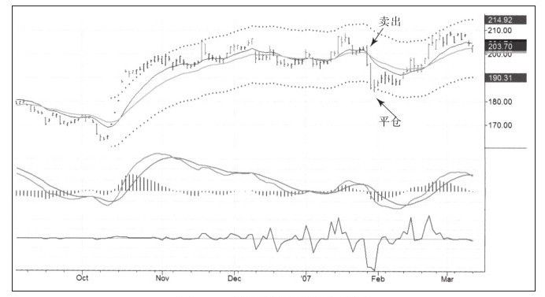

做空股票有一些限制，但做空期货、期权和外汇却完全自由，做空在这些市场上必不可少。作为股票交易者，你必须学会买和卖，做空只是一个选择。因为即便在买入机会很少的熊市，也可以找到景气行业，但如果股票交易者知道如何做空，就能在来回震荡的牛市中取得绝对优势，在熊市中更是如此。所以我建议你学习做空。
股票市场做空的人不多，但在外汇、期货和期权市场上却有大量的人在做空。事实上，做空期货和外汇的规模与做多的规模一样大！在这两个市场，每一张合约都有一张对手合约存在。
做空是衍生品市场不可或缺的部分，与其教你了解衍生品市场，不如在每节中向你推荐我认为的好书。这些书会让你了解到衍生品市场的基础知识，然后在分市场展开讨论时，我们就直接开始介绍如何做空。
买入股票，相当于买入既存商业的股份，但如果买入期货合约，除了一张与商品对应的合约外，其他什么都没有获得，你的交易对手是在未来把商品卖给你的人。这意味着对于每一张多单，都有一张对应的空单存在，以此形成一张张成交的期货合约，而交易双方要据此合约缴纳交易保证金。
期货：推荐书目
乔治·安吉尔的《赢在期货市场》（Winning in the Futures Markets）是最好的入门书籍（这是我唯一推荐的书籍）。杜里斯和琼斯的《期货游戏》（Futures Game）是期货市场的小百科全书，这本书使好几代期货交易者受益（要读最新版）。托马斯·海尔奈莫斯的《期货交易经济学》是期货交易的高级书籍，不过已经很久没有出版了，那就找一本二手的副本吧。最后，同样重要的是我的那本《走进我的交易室》中有关期货的章节。
没有人比托马斯·海尔奈莫斯的《期货交易经济学》对期货的基本原则阐述得更好了，这是最有深度、最有智慧的一本期货书籍，但很不幸它已经多年不再出版了。或许这不是一本教你如何去做的书籍，所以没有人关心它是否再版，只有网上的二手书店有其重印版出售。在开始探讨做空期货话题之前，先浏览一下我的稿件，我想和你分享一些金玉良言。
当然，做空期货时没有愚蠢的“证券交易报升规则”，当你发出指令卖出期货合约时，平多与做空没有区别。
市场中也没有关于内幕交易的禁令。你可以通过商品期货交易委员会（Commodity Futures Trading Commission,CFTC）的定期持仓报告来追踪内幕交易者的行为。
期货市场上的大多数空单是由商业头寸或对冲基金头寸组成，他们是真正的内幕交易者。比如，大型农业综合企业可能会在丰收年在期货市场上提前卖出期货以锁定销售价格，但这只是游戏的一部分，几乎所有对冲基金都把期货部作为其利润中心，而不止作为风险对冲部门，他们希望在期货市场上做空获利。
期货价格波动时，如海尔奈莫斯所言，就会有大量参与者参与进来。商品流通会带来供应成本，比如储存成本、资金成本以及保险，这些都将计入商品期货价格中。如果这些成本持续增加，日积月累的结果是商品期货价格涨到让人不可思议的高度。实际情况是，价格成本变动相对较慢，价格上涨的趋势不时被短暂剧烈的下跌所打断，此时价格回到接近现实的水平，然后开始新一轮的循环。
海尔奈莫斯谈期货
·市场是平衡的判官，对于每个正确的判断来说都有一个错误的判断与之对应。期货交易是刺激的游戏，游戏的得分就以盈亏计。
·投机行为在证券市场上已是久负盛名，在期货市场上更胜一筹，因为商品合约生命更加短暂。无论涨跌，交割日来临时交易量锐减就是最好的证明。
·农产品收获时的供给效应会一直持续到下一季收获时，此时的价格是有且仅有的价格，这个价格是供需平衡的价格。
·当前价格反映的是交易者预期未来价格均衡的综合判断。所有市场参与者的综合判断形成市场平衡价格，这个价格不会改变。但参与形成这种均衡态的投资个体中没有人会认为均衡已经达到，否则他们也不会开仓交易，很明显在个体投资者眼中这种均衡是错误的。
·交易者开仓就表明他要挑战市场大众所形成的均衡，并以此证明当前市场处在错误之中。
·每个投机者都该有自知之明，或许更重要的是他必须远离另外一些人的游戏。市场会讲述它自己的故事，你唯一的工作就是仔细倾听。
·试图抓住市场所有机会的人是市场中“最可爱”的人，同时也是最蔑视市场智慧的人，这些人专门从事市场微调。
·参与者无论盈亏，都要按其交易规模支付佣金、经纪费、清算费。
·对市场贡献最大的人是那些持有亏损头寸过久的人。
·那些在交易时没有规则和不能坚持始终如一交易的人也在市场贡献最大者之列。
·投资者的存在形成了持有成本，他们的行为造成期货价格不断上涨。但如果期货基本的价值并没有随时间的推移而改变，期货价格也不太可能一直上涨，因此总体的价格结构必须被周期性的下跌所打断。
摘自《期货交易经济学》，托马斯·海尔奈莫斯
海浪将沙子推向岸边，形成沙丘，当潮水退去时，沙丘也随着向下滑落，如此往复。这就是你所看到的大多数期货市场的运动情形，缓慢向上、快速崩塌。
埃尔德谈期货
买入股票就等于拥有了部分公司；买入期货合约，除了签署一份未来获得商品的期货合约外，可能什么都没有获得，这些商品可能是一车小麦或一捆国库券。卖给你期货合约的人有履行交割的义务。
每份期货合约上都规定有交收日期，不同交收日期的合约售价不同。一些交易专家通过分析不同月份合约之间的价差来预测价格反转。
期货适合那些有很强的资金管理能力的人交易。期货交易会给交易者带来很高的收益，但需要近乎冷酷的交易纪律。在刚开始交易期货时，你最好先从慢速移动的股票摆脱出来。而一旦成为了交易专家，再看看期货，此时如果你非常有纪律，这个市场可能就非常适合你。
与股票不同，期货有天然的“天花板”和“地板”。二者都不是固定不变的，但是在买入或卖出之前，应该弄明白价格距离“天花板”和“地板”哪个更近一些。期货价格的底是生产成本，当价格低于生产成本时，生产者开始减产、供应下降、价格上升。如果白糖供过于求，而且全球范围内的价格都跌破糖农种植成本，很多种植者就会减少种植比例。当然也有例外，比如当一个不顾一切的穷国向全世界出售商品以获得硬通货同时支付给国内工人贬值的本国货币时，价格会远远低于生产成本，但这种情形不会持续太长时间。
多数商品价格的“天花板”是替代品成本。如果价格合适，一种商品可以替代另一种商品。比如作为动物饲料的谷物价格上涨，用小麦饲养动物可能就变得很便宜，当多数农民转向生产谷物时，谷物价格就被“釜底抽薪”。市场极度兴奋时价格可能会短暂地高于“天花板”，但不会停留很长时间。价格回到正常水平的过程就是给那些精明的交易者赚钱机会的过程。从历史中学习会让你保持冷静。
摘自《走进我的交易室》，亚历山大·埃尔德
期货市场上有大量的买入机会，但鉴于本书主要讨论卖出和做空，所以我们忽略买入主要讲做空，一起学习如何在这个慢涨快跌的市场中获得优势。
可可期货是出了名的难交易，20世纪70年代有个美国旅行家（曾使用亚当·斯密作为其笔名）曾开玩笑说道：如果你有交易可可期货的念头的话就先躺下，直到这种交易念头消失为止。可可因为短期剧烈波动而臭名昭著，从图中我们可以看到，大多数剧烈波动都发生在下跌时（见图8-1）。

在相对平静的股票市场上，上涨持续的时间比下跌要长；比之更甚的是期货市场，下跌往往一蹴而就。即便是可可这样一个非常平的价格区间中，你也可以看到多数上涨持续了几周甚至几个月，而只需要仅仅一周时间就跌回上涨的起点，缓慢上升的价格很快被打回原形。
缓慢上涨让交易新手误以为很安全，之后突然出现一则利空，比如意外发生飓风，价格像扎破的气球一样快速下跌。当市场大众反应过来夺路而逃的时候，职业交易者的空单开始平仓出场，市场新一轮的循环又即将开始。在图8-2右侧靠中间的部分，金价缓慢而坚定地上涨，看起来非常平静，就好像牛在说：万事都好，快来玩这个游戏吧。
明智的交易者看着同期价格的日线图（见图8-2）并注意到价格已经上涨了一个半月，价格也已经涨了42美元。他知道如果就此买入必须设置止损，但问题是止损位特别难以设定。当然，在这种情况下使用止损反转指令是可取的。虽然我不是很喜欢这类指令，但对于缓慢上升的行情来说这确实有意义，这个指令会让你结束多单时反手做空。
最后，我将从交易日志中拿出一则交易案例（如图8-3所示）与你分享，这则交易案例会说明交易者如何从期货的快速下跌中赚钱。


周末总结时橘汁期货的走势让我眼前一亮。大多数周末，我都会花一个多小时来浏览美国主要期货市场，期货市场的优势之一就是品种不多。追踪所有的期货品种不像几千只股票那么困难。
价格泡沫周一就被刺破，上涨疲弱转为快速下跌（如图8-4）。


无论从感受上还是从获利上这次交易无疑都是令人满意的，我希望更多的交易都这样（如图8-5和图8-6所示）。入场有逻辑、出场信号也非常明确。因此，慢涨快跌的期货品种值得关注。

当日线图表中价格跌到下轨价之下时，我平仓出局，交易在两天之内结束。可能下跌还会继续，但既然盈利目标已经达到，就没有理由再继续持有了。


看看橘汁期货之后两个月的走势，入场和出场都很有学习价值。在图的右侧，价格又开始在一次向上假突破后下跌。